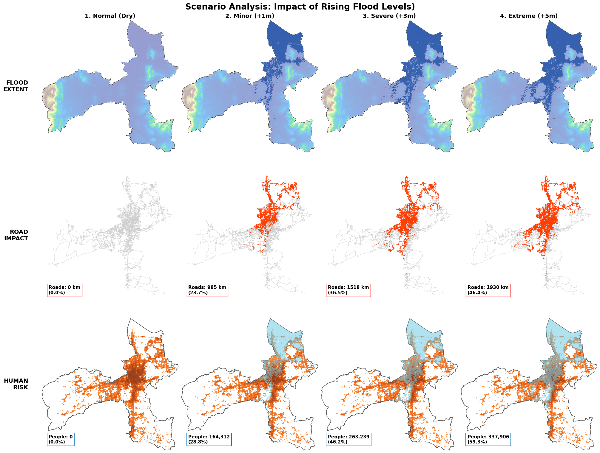

Show Code
import matplotlib.pyplot as plt
import geopandas as gpd
import rasterio
from rasterio.mask import mask
from rasterio import features
import numpy as np
import osmnx as ox
from shapely.geometry import shape, box
from matplotlib.colors import LogNorm
dem_path = "data/hat_yai_dem_filled.tif"
pop_path = "data/tha_pop_2025_CN_100m_R2024B_v1.tif"
hat_yai_city = ox.geocode_to_gdf("Hat Yai, Songkhla, Thailand")
city_wgs84 = hat_yai_city.to_crs(epsg=4326)
# Calculation Mask
lake_box = box(100.44, 7.08, 100.65, 7.25)
lake_gdf = gpd.GeoDataFrame(geometry=[lake_box], crs=4326)
city_calc_area = gpd.overlay(city_wgs84, lake_gdf, how='difference')
# -----------------------------------------------------------
if 'G_proj' not in globals():
G = ox.graph_from_place("Hat Yai, Songkhla, Thailand", network_type='drive')
G_proj = ox.project_graph(G)
roads_utm = ox.graph_to_gdfs(G_proj, nodes=False)
roads_wgs84 = roads_utm.to_crs(epsg=4326)
roads_calc_utm = gpd.clip(roads_utm, city_calc_area.to_crs(32647))
total_road_len = roads_calc_utm.length.sum() / 1000 # km
river_bed_level = 0
with rasterio.open(dem_path) as src_dem:
out_dem, _ = mask(src_dem, city_calc_area.geometry, crop=True)
dem_arr = out_dem[0]
valid = dem_arr[dem_arr != src_dem.nodata]
if len(valid) > 0: river_bed_level = np.nanpercentile(valid, 5)
else: river_bed_level = 10
# 4 scenarios
scenarios = [
(None, "1. Normal (Dry)"),
(1.0, "2. Minor (+1m)"),
(3.0, "3. Severe (+3m)"),
(5.0, "4. Extreme (+5m)")
]
results = []
with rasterio.open(dem_path) as src_dem, rasterio.open(pop_path) as src_pop:
out_pop, pop_trans = mask(src_pop, city_wgs84.geometry, crop=True)
pop_viz = np.where(out_pop[0] < 0, np.nan, out_pop[0])
out_pop_calc, _ = mask(src_pop, city_calc_area.geometry, crop=True)
total_pop_calc = np.nansum(np.where(out_pop_calc[0] < 0, 0, out_pop_calc[0]))
for rise, label in scenarios:
data = {"label": label, "flood_viz": gpd.GeoDataFrame(), "road_viz": gpd.GeoDataFrame(),
"pop_val": 0, "road_val": 0}
if rise is not None:
target = river_bed_level + rise
out_dem, out_trans = mask(src_dem, city_wgs84.geometry, crop=True)
flood_mask = (out_dem[0] <= target) & (out_dem[0] != src_dem.nodata)
shapes = features.shapes(flood_mask.astype('uint8'), transform=out_trans)
geoms = [shape(g) for g, v in shapes if v == 1]
if geoms:
flood_gdf_full = gpd.GeoDataFrame(geometry=geoms, crs=4326)
data["flood_viz"] = flood_gdf_full
flood_gdf_calc = gpd.overlay(flood_gdf_full, city_calc_area, how='intersection')
if not flood_gdf_calc.empty:
try:
out_img, _ = mask(src_pop, flood_gdf_calc.geometry, crop=True)
data["pop_val"] = np.nansum(np.where(out_img[0] < 0, 0, out_img[0]))
except: pass
try:
flood_utm_calc = flood_gdf_calc.to_crs(32647)
calc_roads = gpd.clip(roads_utm, flood_utm_calc)
data["road_val"] = calc_roads.length.sum() / 1000
flood_utm_full = flood_gdf_full.to_crs(32647)
viz_roads = gpd.clip(roads_utm, flood_utm_full)
data["road_viz"] = viz_roads.to_crs(4326)
except: pass
results.append(data)
# Visualization
fig, axes = plt.subplots(3, 4, figsize=(20, 15), constrained_layout=True)
fig.patch.set_facecolor('white')
with rasterio.open(dem_path) as src:
dem_viz_arr, dem_trans = mask(src, city_wgs84.geometry, crop=True)
dem_viz_arr = np.where(dem_viz_arr[0] == src.nodata, np.nan, dem_viz_arr[0])
h, w = dem_viz_arr.shape
extent = [dem_trans[2], dem_trans[2]+w*dem_trans[0], dem_trans[5]+h*dem_trans[4], dem_trans[5]]
for col, data in enumerate(results):
# Row 1: Flood Extent (
ax1 = axes[0, col]
ax1.imshow(dem_viz_arr, cmap='terrain', extent=extent, alpha=0.5)
city_wgs84.plot(ax=ax1, facecolor='none', edgecolor='black', linewidth=0.5)
if not data['flood_viz'].empty:
data['flood_viz'].plot(ax=ax1, color='#0D47A1', alpha=0.7) # <--- 之前报错就是这里少了括号
ax1.set_title(f"{data['label']}", fontsize=14, fontweight='bold')
ax1.axis('off')
if col == 0: ax1.text(-0.1, 0.5, "FLOOD\nEXTENT", transform=ax1.transAxes,
va='center', ha='right', fontsize=14, fontweight='bold')
# Row 2: Road Impact
ax2 = axes[1, col]
if not roads_wgs84.empty:
roads_wgs84.plot(ax=ax2, color='#CCCCCC', linewidth=0.3)
if not data['road_viz'].empty:
data['road_viz'].plot(ax=ax2, color='#FF3D00', linewidth=0.8)
pct_road = (data['road_val'] / total_road_len) * 100 if total_road_len > 0 else 0
ax2.text(0.05, 0.05, f"Roads: {data['road_val']:.0f} km\n({pct_road:.1f}%)",
transform=ax2.transAxes, fontsize=11, fontweight='bold',
bbox=dict(facecolor='white', alpha=0.8, edgecolor='red'))
ax2.axis('off')
if col == 0: ax2.text(-0.1, 0.5, "ROAD\nIMPACT", transform=ax2.transAxes,
va='center', ha='right', fontsize=14, fontweight='bold')
# Row 3: Human Risk
ax3 = axes[2, col]
ax3.set_facecolor('white')
ax3.imshow(pop_viz, cmap=CMAP_POP, norm=LogNorm(), extent=extent, alpha=0.9)
city_wgs84.plot(ax=ax3, facecolor='none', edgecolor='#555', linewidth=1.2)
if not data['flood_viz'].empty:
data['flood_viz'].plot(ax=ax3,
color=COLOR_FLOOD,
alpha=0.6,
edgecolor='none')
pct_pop = (data['pop_val'] / total_pop_calc) * 100 if total_pop_calc > 0 else 0
ax3.text(0.05, 0.05, f"People: {int(data['pop_val']):,}\n({pct_pop:.1f}%)",
transform=ax3.transAxes, fontsize=11, fontweight='bold',
bbox=dict(facecolor='white',
alpha=0.9,
edgecolor=COLOR_FLOOD_BORDER,
linewidth=1.5))
ax3.axis('off')
if col == 0: ax3.text(-0.1, 0.5, "HUMAN\nRISK", transform=ax3.transAxes,
va='center', ha='right', fontsize=14, fontweight='bold')
plt.suptitle("Scenario Analysis: Impact of Rising Flood Levels)",
fontsize=20, fontweight='bold', y=1.02)
plt.savefig('final_matrix_analysis_fix.png', dpi=300, bbox_inches='tight')
plt.show()
